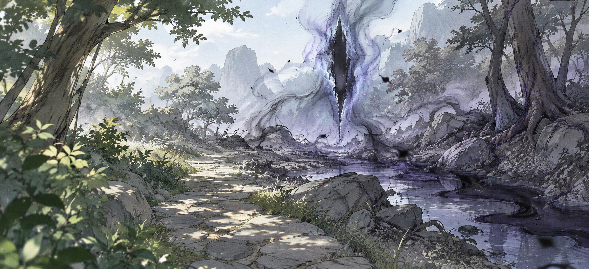
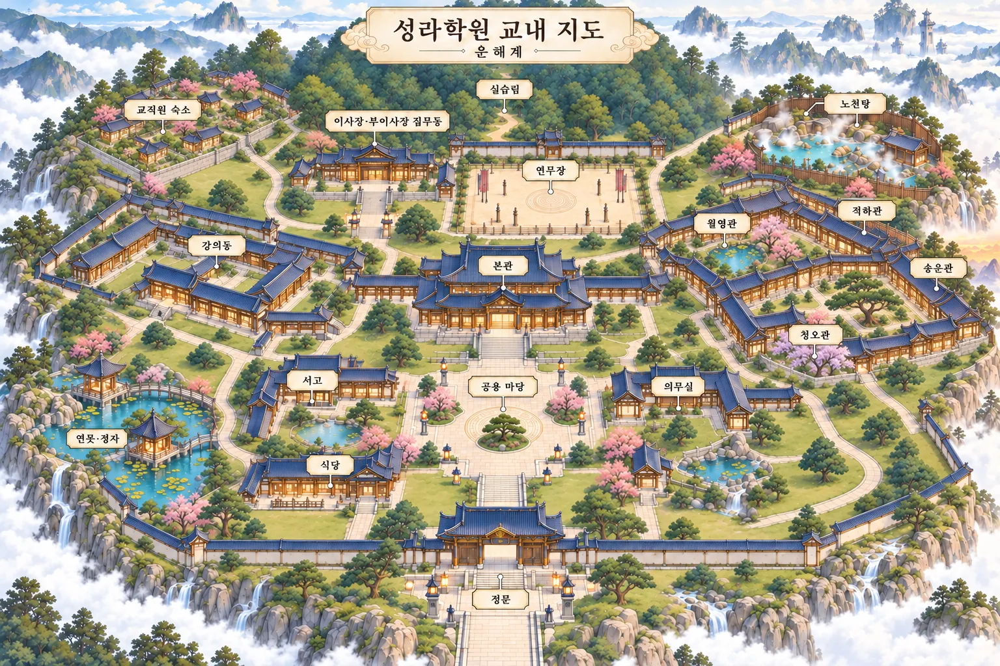

이미지를 불러오지 못했어요. 다른 장을 확인해 주세요.
1 / 3
星羅學院
성라학원은 신과 요괴가 자신의 능력을 이해하고, 함께 살아가는 법을 배우는 4년제 교육기관입니다.
술법과 체술의 기초부터 제어·정화·현장 실습까지. 서로 다른 재능을 지닌 학생들이 배움과 경험을 쌓으며 성장합니다.
세 세계의 경계, 서로 다른 존재들의 일상이 이어지는 곳.
운해계는 인간계와 천계·명계 사이에 자리한 중간계입니다. 구름바다에 둘러싸인 산과 마을에서 인간과 신, 요괴가 이웃으로 살아갑니다. 서로 다른 수명과 능력, 생활 방식을 지닌 이들이 만나 하나의 사회를 이루는 세계입니다.
운해계의 인간은 일반적인 인간보다 수명이 길고 능력을 지닙니다. 신과 요괴는 인간보다 두세 배 긴 삶을 살아갑니다. 종족과 능력이 달라도 같은 거리에서 생활하고, 배우고, 일합니다.
기와지붕 아래에서 휴대폰과 컴퓨터를 쓰고, 술법과 현대 기술을 함께 활용합니다. 인터넷과 현대식 의료 장비도 일상의 일부입니다. 여러 전승에서 비롯된 문화가 어우러져 있으며 현실의 국가 구분을 그대로 따르지는 않습니다.
세 세계에서 흘러든 기운은 적은 양일 때 자연스럽게 흩어집니다. 그러나 경계가 불안정해 기운이 한곳에 쌓이면 균형을 잃고 마기로 변합니다. 마기는 땅과 생물을 침식하며, 마물을 발생시키기도 합니다. 함께 살아가는 요괴와 마물은 구분됩니다.
운해계에서는 마기 조사와 정화, 마물 토벌, 호위와 구조 등의 의뢰가 이루어집니다. 성라학원은 자신의 능력을 이해하고 제어하는 법부터 현장 대응까지 가르치는 4년제 교육기관입니다. 학생들은 수업과 실습, 등급에 맞는 의뢰를 통해 경험을 쌓습니다.
서로 다른 세계의 기운이 뒤섞여 균형을 잃으면 마기가 생깁니다. 경계가 불안정한 곳에서 기운이 한꺼번에 흘러들면 한곳에 쌓입니다.

마기는 땅과 생물을 침식하고, 신과 요괴도 심하게 침식되면 능력이 불안정해지고 이성을 잃을 수 있습니다. 마물은 동식물이 마기에 오래 노출되어 변질되거나, 고농도 마기가 뭉쳐 생깁니다. 사회를 이루어 사는 요괴는 마물과 다르며, 요괴라는 이유만으로 마물 취급하지 않습니다.
토벌만으로는 끝나지 않아 유입 지점 조사, 경계 봉쇄, 오염 지역 정화가 함께 이루어집니다. 통로를 강제로 열거나 봉쇄 시설을 훼손해 인위적으로 일으키는 경우도 있습니다.
개인 등급과 의뢰 등급은 모두 1~5급이며 1급이 가장 높습니다. 자신의 등급과 같거나 낮은 등급의 의뢰에 참여할 수 있습니다.
| 5급 | 안전 구역 채집·배달·기초 조사 |
|---|---|
| 4급 | 하급 마물 퇴치·단거리 호위 |
| 3급 | 중급 마물 토벌·오염 지역 조사 |
| 2급 | 상급 마물 토벌·고농도 마기 지역 구조 |
| 1급 | 대규모 토벌·거주지 붕괴 위기 대응 |
학년과 개인 등급은 별개입니다. 등급은 전투력뿐 아니라 능력 제어, 현장 판단, 협동과 임무 수행 능력을 함께 평가합니다. 상위 등급 현장 교육은 교수 인솔과 별도 승인 아래 진행합니다.
교직원과 학생들의 카드를 눌러 소개를 확인해 보세요.
이미지를 불러오지 못했어요. 다른 장을 확인해 주세요.
건물은 전통적인 외관을 유지하고, 내부에는 현대 설비를 갖췄습니다.

지도의 이름표를 눌러 보세요.
학원 곳곳의 공간을 한눈에 정리했어요.
오리엔테이션, 중간·기말시험, 실기 수업, 현장 실습, 축제 등의 활동이 있습니다. 세부 일정은 추후 공지합니다.
사진과 정보를 입력해 나만의 학생증·교직원증을 만들어 보세요.
입력한 내용이 바로 반영됩니다. 빈 항목은 비워둡니다.
운해력 2186학년도 · 학원 일정과 구성원들의 생일을 확인하세요.
학사 일정 · 생일 · 학사일정은 매년 토·일요일을 피해 조정됩니다. 생일은 원래 날짜로 표시됩니다.
성라학원의 학생이나 교직원 캐릭터를 만들어 보세요. 직접 쓰거나, 목록에서 고르거나, 무작위로 채울 수 있어요.
1급이 가장 높아요. 등급은 전투력뿐 아니라 능력 제어, 현장 판단, 협동을 함께 평가해요.
교직원에게는 개인 등급이 따로 없어요.
이미 있는 과목: 류진 술법 제어·응용 실습 / 쥬 술법학·마기 정화 / 현무 전술·현장 판단 / 백호 체술·근접전 실습. 목록과 무작위에서는 빠져 있어요.
星羅學院
구름바다 위의 학원, 운해계로 들어갑니다.